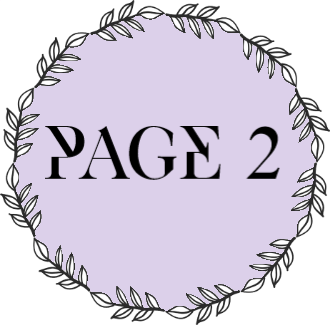
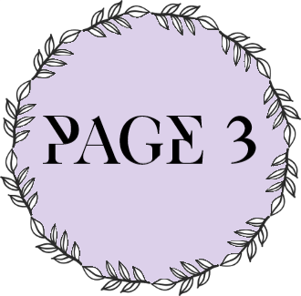
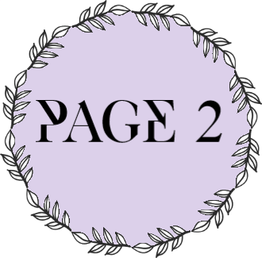
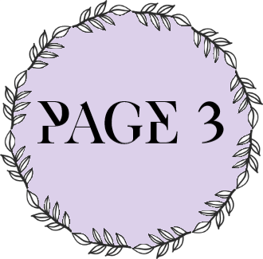

Megan Holmes Portfolio
Megan Holmes Portfolio
ISP 10:
This is a program that will allow a user to customize a car. The most rewarding part of this project was really learning about how to make the game flow and be very user-friendly, from menus to graphics. I really enjoyed the graphics specifically and loved designing th different cars and the game's theme.


You can access this project here: ISP 10
ISP 11:
This program is a game that allows the user to play on a simulated slot machine. Like my grade 10 ISP, I really enjoyed doing the graphics for this game and making the experience as flawless as I could. What made this project even more challenging and rewarding was the use of files and reading and sorting high scores, adding even more


You can access this project here: ISP 11
 
